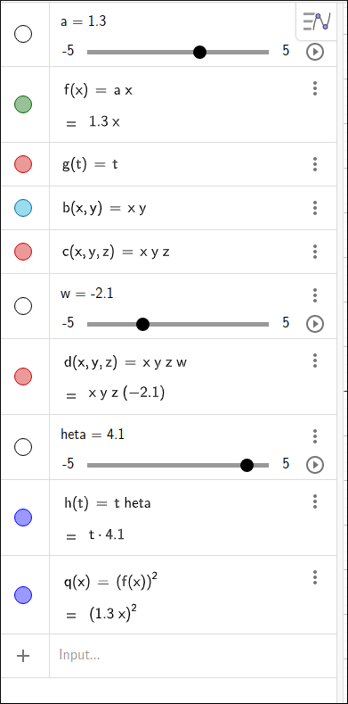

GeoGebra Expression Syntax#
The following sections outline the syntax for GeoGebra expressions. GeoGebra has an expression formatter in each of its input cells so much of the syntax is taken care of “under the hood” with this system but you still need to know some basic syntax.
If you click in an input box in the input panel on the left, an editing panel appears that has several modes. The toolbar above the keypad will allow you switch between numbers, functions, qwerty keyboard, and special symbols. Also the three dots icon on the far right of this toolbar will open up the function quick help system that shows you all of the functions you have available for input. Clicking on any if these will load the function syntax into the input box, you can also type in the function name from the keyboard.

Command List#
Arithmetic Operations#
The basic arithmetic operations are +, -, *, \, and ^. All of which do what you would expect. The ^ is exponentiation which will move the cursor into the exponent, ti get out of the exponent click the right arrow key. Note that * can be used for multiplication but GeoGebra does understand juxtaposition as multiplication, so for \(2x\) you can use the syntax 2 x or 2x.
Variables#
The GeoGebra workspace on the left is closely linked to the graphs view on the right. In so doing, GeoGebra is a bit more restrictive on variables. In GeoGebra, x, y, z, and t are seen as independent variables and all other names are considered constants. When GeoGebra encounters a constant it will automatically make a slider for the constant and substitute the slider value in for the constant in the expression. For example, if you input theta GeoGebra will see this as t*heta and make a slider for heta. While this is a nice feature for the graphics facilities it does put some restrictions on what you can do as far as general CAS operations.
Previous Entries#
GeoGebra gives a name or label to all of the entries in the CAS listing on the left. To use any previous entry simply use the name that was given. For example, in the image below for the lest entry we input f^2 and the entry was complete.

Entry List#
Infinity#
Infinity, \(\infty\), is represented as either inf or infinity and \(-\infty\) is represented as either -inf or -infinity.
Special Constants#
pirepresents \(\pi\)erepresents \(e\).irepresents \(i\) the imaginary unit.
Absolute Value#
Either
abs(x)or|x|represents \(|x|\).
Root Functions#
sqrt(x)represents \(\sqrt{x}\).cbrt(x)represents \(\sqrt[3]{x}\).nroot(x, n)represents \(\sqrt[n]{x}\).Roots can also be written exponentially, for example,
x^(1/3)for \(\sqrt[3]{x}\).
Trigonometric Functions#
The trigonometric functions are as you would expect,
sin(x)for \(\sin(x)\).cos(x)for \(\cos(x)\).tan(x)for \(\tan(x)\).cot(x)for \(\cot(x)\).sec(x)for \(\sec(x)\).cosec(x)for \(\csc(x)\).
Inverse Trigonometric Functions#
The inverse trigonometric functions simply have an a in front of them,
asin(x)for \(\sin^{-1}(x)\).acos(x)for \(\cos^{-1}(x)\).atan(x)for \(\tan^{-1}(x)\).
Exponential & Logarithmic Functions#
exp(x)represents \(e^x\).e^xrepresents \(e^x\).ln(x)represents \(\ln(x)\).lg(x)represents \(\log_{10}(x)\).log10(x)represents \(\log_{10}(x)\).log(x)represents \(\log_{10}(x)\).log2(x)represents \(\log_{2}(x)\).ld(x)represents \(\log_{2}(x)\).log(b, x)represents \(\log_{b}(x)\).
Hyperbolic Functions#
The hyperbolic functions are as you would expect,
sinh(x)for \(\sinh(x)\).cosh(x)for \(\cosh(x)\).tanh(x)for \(\tanh(x)\).coth(x)for \(\coth(x)\).sech(x)for \({\rm sech}(x)\).cosech(x)for \({\rm csch}(x)\).
Inverse Hyperbolic Functions#
The inverse hyperbolic functions simply have an a in front of them,
asinh(x)for \(\sinh^{-1}(x)\).acosh(x)for \(\cosh^{-1}(x)\).atanh(x)for \(\tanh^{-1}(x)\).
Integer Functions#
floor(x)returns the largest integer value not greater thanx.ceil(x)returns the smallest integer value not less thanx.
Miscellaneous Functions#
Some miscellaneous functions that may be of interest.
sgn(x)returns the sign ofx,1if \(x>0\),0if \(x = 0\), and-1if \(x<0\).n!returns n factorial which is defined for non-negative integers with \(0! = 1\) and \(n! = n(n-1)(n-2) \cdots 1\) for \(n > 0\).
Other Function Syntax#
GeoGebra has many more functions at the user’s disposal, many are beyond scope of a STEM Calculus class. Nonetheless, they can be used in expressions. Above we covered the ones that are most pertinent for Calculus classes.